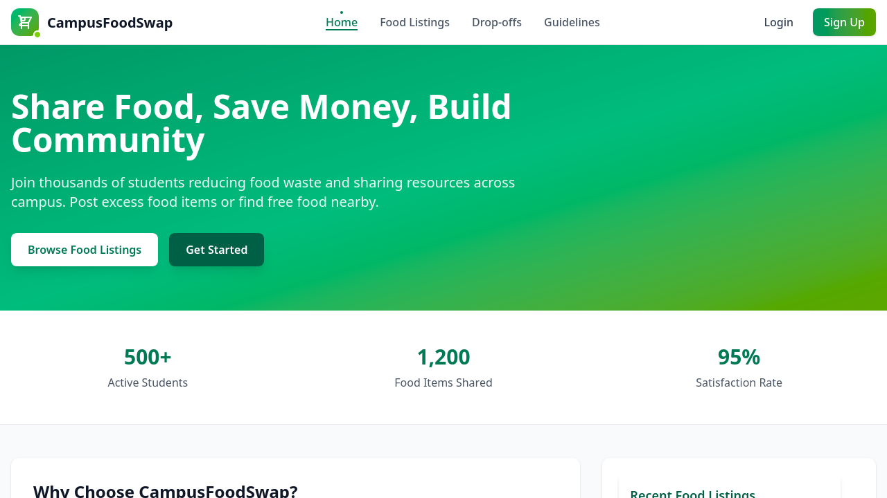
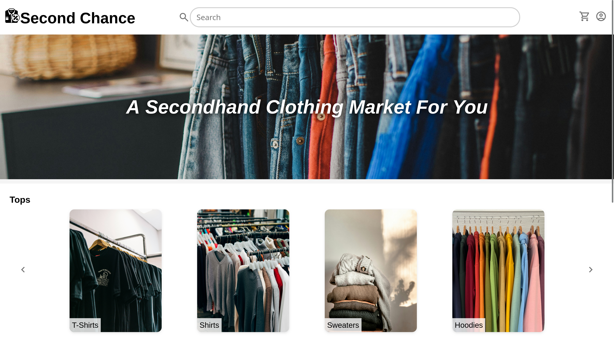
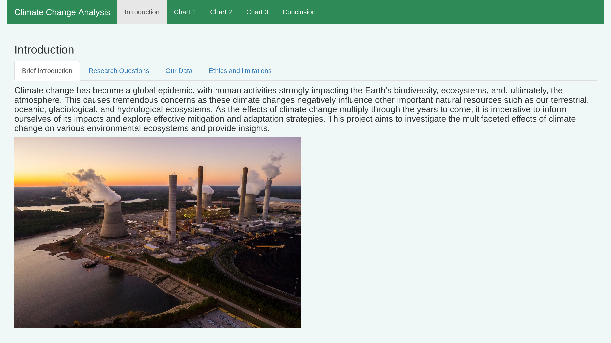

Tyler Nguyen
Hi, I'm Tyler - I'm a student at the University of Washington and a software developer with an interest in cybersecurity
About Me
I'm currently pursuing my degree, a Bachelor of Science in Informatics, through the iSchool at the University of Washington. While my main focus is in software development, my interest in online privacy and security has also led me to explore academics in cybersecurity and risk management through the Informatics major. In addition to helping me navigate technology decisions in my day-to-day life, this has also helped to inform my hobby homelab, where I self-host services for personal use and gain hands on experience learning things like system architecture and networking.
My Projects
Click on a project for more details

CampusFoodSwap
Empowering university students with accessible tools to build sustainable food habits, reduce waste and conserve resources through community.

Second Chance
Creating a platform to empower sustainable style, reducing waste and promoting re-use.

Climate Change Analysis
Investigating the multifaceted effects of climate change on various environmental ecosystems to provide insights and explore effective mitigation and adaptation strategies
Other
Outside of school, my interest in music and games has inspired me to spend time programming for fun, working on tools such as metadata taggers for my music collection or the occasional bit of game development. This has allowed me to continue to build my skills in contexts other than the primarily web-dev focused courses of the iSchool and learn about things that are interesting to me like rust and vulkan. I look forward to sharing these projects when they are more complete.